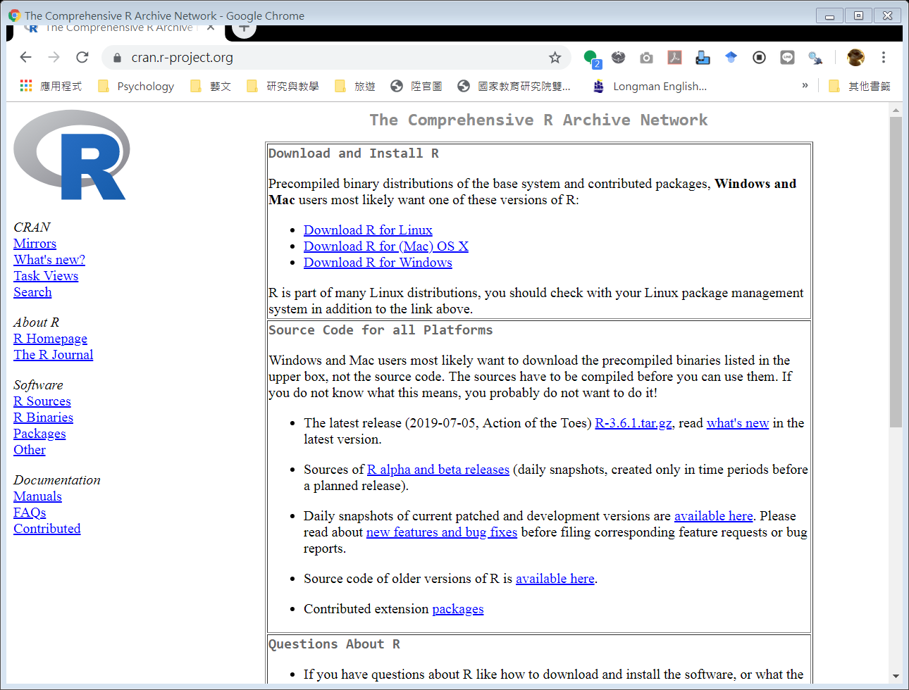
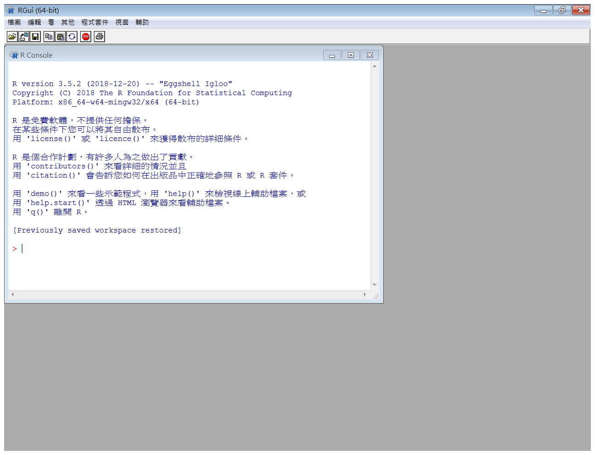
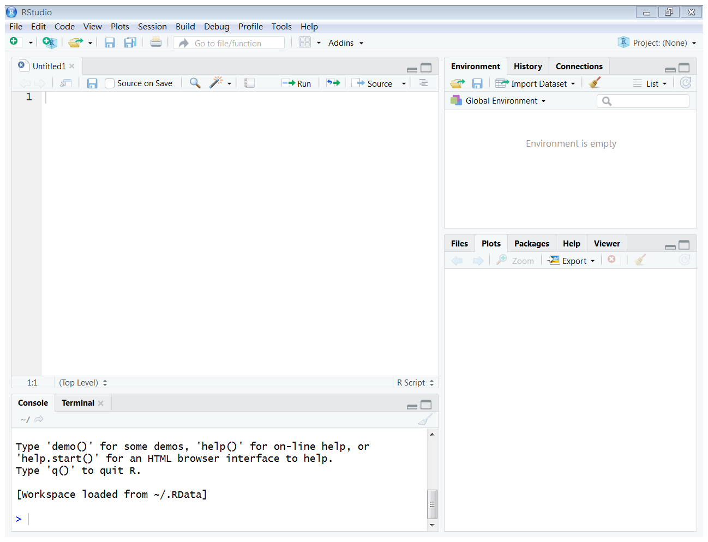
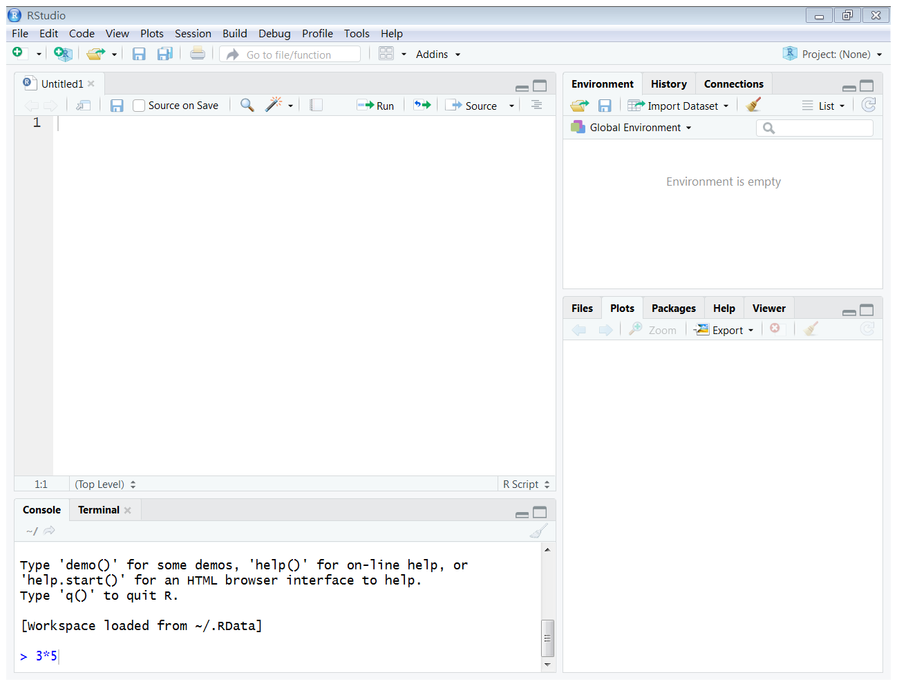
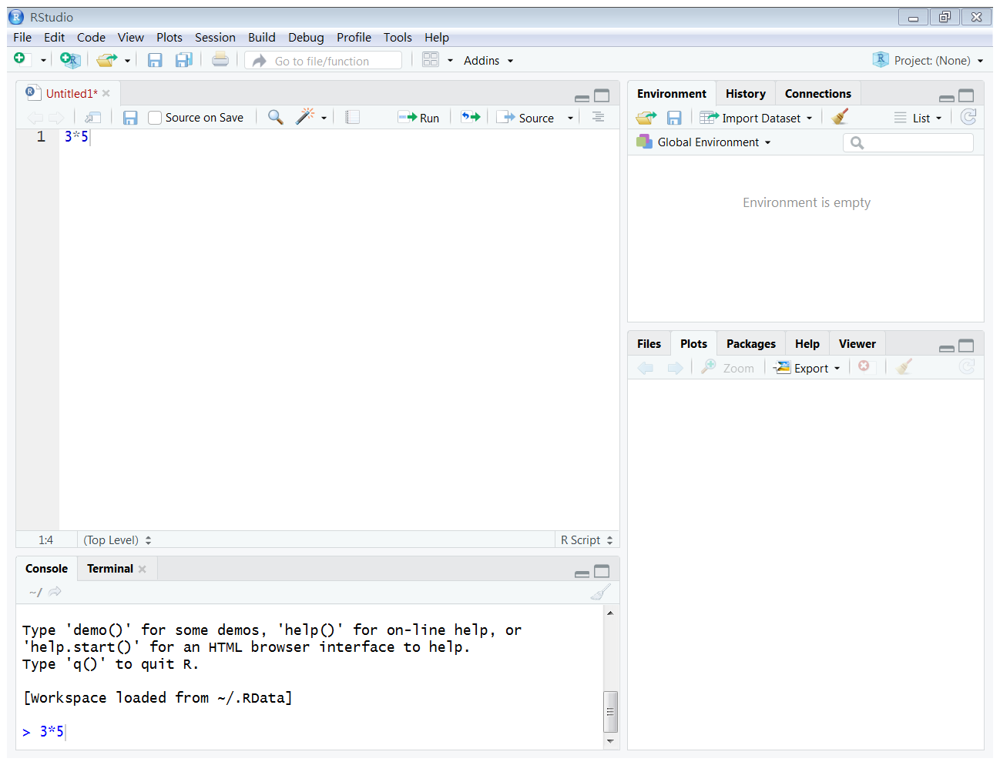
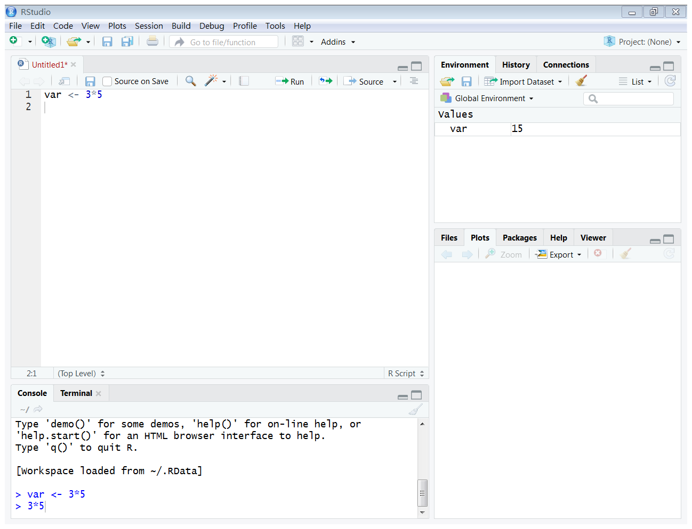
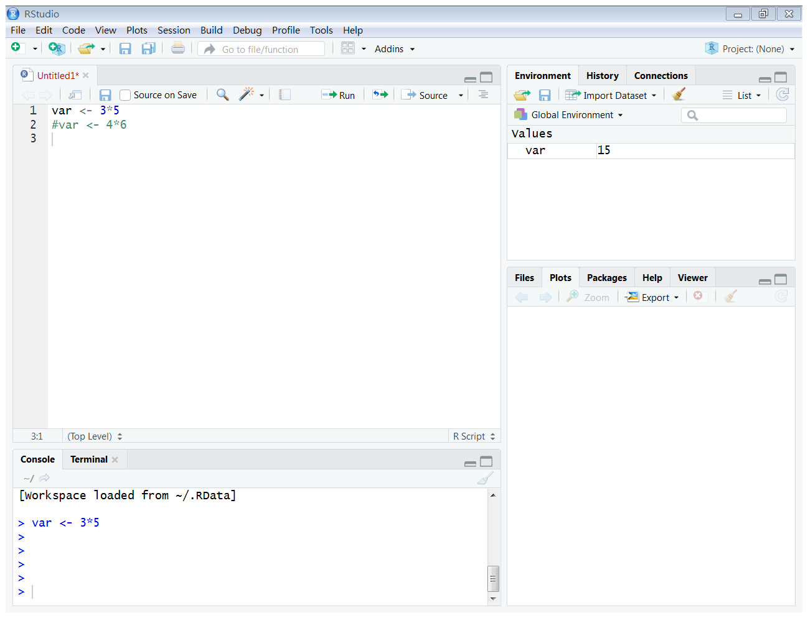
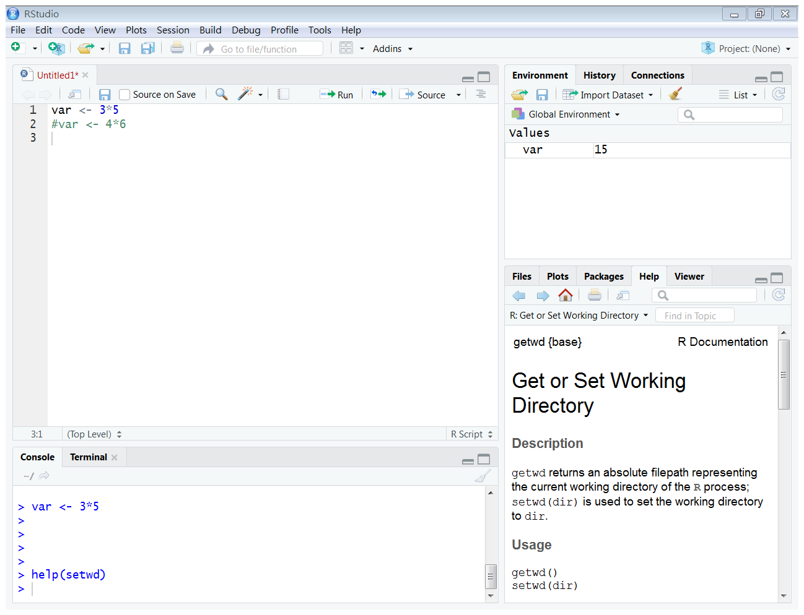
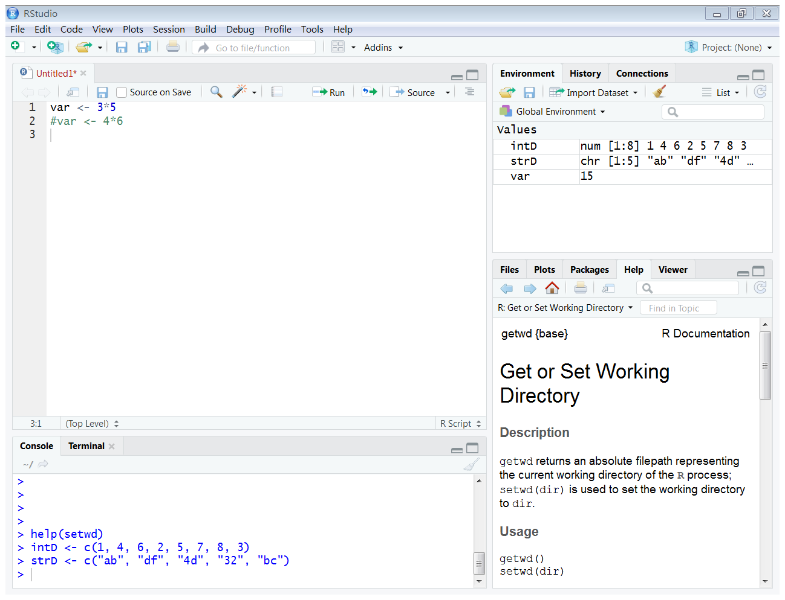

Chapter 1 R語言的基本概念與語法
課程簡介
課程簡介
- 本次課程為R語言的基礎介紹
- 主要目的在熟悉R語言的環境與基本用法
- 重點在R語言的基本與特殊的資料型態
學習目標
- 能夠安裝R 語言的開發環境，包括核心程式以及整合開發環境(Integrated Development Environment, IDE) RStudio
- 能夠運用RStudio 撰寫R 語言的指令
- 能夠區別R 語言的各種基本資料型態：integer、numeric、character、logic、factor
- 能夠區別R 語言的各種進階資料型態：vector、matrix、array、list、data frame
1.1 R語言的基本概念
R語言簡介
R語言是一種自由的軟體程式語言，可用於統計分析、資料探勘、資料視覺化。R語言本身便具有多種統計及資料分析功能，再加上許多統計學家與資料科學家的努力，撰寫了許多強大功能的套件(package)。使用者只要熟知R語言的語法、指令和套件，便能輕易完成許多於統計分析、資料探勘、資料視覺化的任務。
R語言的資源中心
CRAN (The Comprehensive R Archive Network) 是R語言的資源中心，使用者可以在這個網站中下載R語言的執行檔、原始碼和說明文件，CRAN也收錄了各種套件。

請進行下面的步驟安裝R語言的核心程式：
- 請連線到CRAN
- 點選Download R for (Mac) OS X 或Download for Windows 連結，下載R語言的核心程式，進行安裝
- 注意目前的版本(R語言常常會有新的版本釋出，若有需要可下載更新)
安裝成功的R語言的核心程式

R的編寫介面
R本身的介面不容易用於開發程式，因此R語言的愛好者，開發了許多整合開發環境(Integrated Development Environment, IDE)，其中RStudio是較著名的一個。
請進行下面的步驟安裝R語言的核心程式
- 請連線到RStudio
- 點選Products 下的RStudio 下載，安裝RStudio
Rstudio的儀表板
請開啟RStudio

- Console：執行敘述，呈現敘述執行的結果 (左下)
- Source：開發程式開發 (左上)
- Environment：目前使用的變數與自行定義的函數 (右上)
- Help：查詢函數 (右下)
- Plots：繪圖 (右下)
1.2 R語言的運算
R語言的運算式由常數(constants)、變數(variables)、運算子(operators)和函數(functions)等構成，運算式的計算會得到一個結果。
- 如果運算式相當簡單的話，可以在RStudio的Console上，直接執行運算。例如：請在RStudio的Console處輸入以下運算式：

3*5## [1] 15- 如果運算式較複雜或是有需要重複運用，則建議寫成Script，並利用Script右上方的Run進行運算。例如：請在RStudio的Script處輸入以下運算式，並且點選Script右上方的Run：

3*5## [1] 15指定敘述
可將運算式的結果儲存在某一個變數內，稱為指定敘述。例如：請在Console處輸入下面的指定敘述
var <- 3*5上面的指定敘述裡， <-的意思是將右邊運算式(3*5)的結果指定給左邊的變數(var)儲存。執行完後，可以在右上的Environment，查看變數var儲存的數值

註解
在R語言裡，#後的文字被忽略。例如：在Console處輸入下面的敘述
#var <- 4*6在右上的Environment，查看變數var儲存的數值。此時可以發現新的敘述並沒有覆蓋舊的指定敘述。

查詢與設定工作目錄
通常開始一個任務時，會將相關的程式和資料儲存在同一個資料夾，稱為工作目錄。使用工作目錄進行任務，可以減少不少錯誤發生，提高工作效率。
- 在Console上，設定工作目錄
setwd("C:/工作路徑/rCourse/任務X")- 查看目前的工作目錄
getwd()事實上，setwd和getwd都是函數(function)。在R語言裡，函數的使用相當重要。
練習
試著在檔案總管中建立一個新的資料夾，並且使用setwd()將該資料夾設定為工作目錄。
Help
在Console上，查看某一個函數的用法
help(setwd)
右下的Help 出現有關這個函數的解說
另一種常用的寫法
?setwd1.3 R語言的基本資料型態
R語言的基本資料型態包含
- integer
- numeric
- character
- logic
- factor
1.3.1 數值資料型態
integer 與 numeric屬於數值資料型態。數值資料的運算有
+加-減*乘/除^次方%%整數除法的餘數%/%整數除法的商
練習
請在Console下輸入下面的敘述，分別查看c, d, e，說明為何c, d, e 的數值為何不同？
a <- 5
b <- 3
c <- 5/3
d <- 5%/%3
e <- 5%%3數值資料常見的函數有
- abs() 絕對值
- sqrt() 平方根
- round() 四捨五入
注意：函數是學習程式語言裡最重要的一個環節，會使用函數的話，可以大大節省開發的時間和精力。很多函數都是已經開發好的，但有必要的話，也可以自行開發。已經開發的函數又可以分為兩類，一類是系統本身提供的函數，或是由其他人員寫好的套件(package)。目前我們使用的函數都是系統本身提供的函數，日後會大量使用套件，也會自行開發函數。
練習
請在Console下輸入下面的敘述
sqrt(2^4)## [1] 4round(c)## [1] 2說明：函數括號裡的資料稱為參數(parameter)。輸入參數，經由函數運算，得到結果。
1.3.2 文字資料型態
character為文字資料型態。在Console上輸入下面指定敘述，並且查看str1和str2
str1 <- "R"
str2 <- "Language"常用的character函數有
nchar()字串內有多少字paste()字串連接substr()取出字串的一部份
練習
在Console上輸入下面敘述，並且查看運算結果
nchar(str1)## [1] 1paste(str1, str2)## [1] "R Language"substr(str2, 1, 4)## [1] "Lang"1.3.3 邏輯資料型態
邏輯資料型態的值只有兩種：TRUE(真)與FALSE(偽)。邏輯運算有
|或&且!否
練習
在Console上輸入下面敘述，並且查看運算結果
log1 <- 3>5
log2 <- "R Language" == paste(str1, str2)
log1 | log2## [1] TRUElog1 & log2## [1] FALSE1.3.4 factor資料型態
factor資料型態可用於表示名目尺度的資料。在Console上輸入下面敘述，並且查看運算結果
gender_data <- c(2, 1, 2, 2, 1, 1)
gender <- factor(gender_data, labels=c("女", "男"))上面的例子中，依照數值資料的順序，1代表女生，2代表男生。
如果要設定2代表女生，1代表男生，，可以用下面的方法：
gender <- factor(gender_data, labels=c("女", "男"), levels=c(2, 1))1.4 R語言的特殊資料型態
R語言中常會使用下列的特殊資料型態
- vector
- matrix
- list
- data frame
1.4.1 vector
vector是一序列相同型態的資料。在Console上輸入下面敘述，並且查看運算結果
intD <- c(1, 4, 6, 2, 5, 7, 8, 3)
strD <- c("ab", "df", "4d", "32", "bc")在右側的Environment上，觀察vector可以發現：intD為num[1:8]，而strD為chr[1:5]。num和chr分別表示numeric和character資料型態；[1:8]和 [1:5]則是vector的範圍。

vector 上的元素，可以按照其位置取得，甚至替換
intD[4]## [1] 2intD[2:5]## [1] 4 6 2 5intD[c(1,3,5)]## [1] 1 6 5intD[4]表示intD的第4個元素intD[2:5]表示intD的第2到第5個元素intD[c(1,3,5)]表示intD的第1、3、5個元素
vector的運算會針對vector上的每一個資料，逐一進行運算。當兩個vector進行運算時，較短的vector會自動延長，以便兩個vector上面的元素一一對應
intD * 5## [1] 5 20 30 10 25 35 40 15intD + c(1, 2, 3, 4, 5, 6, 7, 8)## [1] 2 6 9 6 10 13 15 11intD + c(1, 2, 3, 4)## [1] 2 6 9 6 6 9 11 7函數c()可以合併vectors
c(intD, c(1, 2, 3, 4))## [1] 1 4 6 2 5 7 8 3 1 2 3 4函數length()可以計算vector長度，也就是vector上的元素個數
length(intD)## [1] 8函數sum()可以計算vector上的元素總和
sum(intD)## [1] 36函數sort()可以對vector上的元素排序
sort(intD)## [1] 1 2 3 4 5 6 7 8sort(intD, decreasing=TRUE)## [1] 8 7 6 5 4 3 2 1sort()中預設的decreasing參數為FALSE，將vector裡的元素由小到大排序。如果將decreasing設為TRUE，則會將vector裡的元素由大到小排列。
函數order()可以找出vector中的元素在由小到大順序中的位置。 * 在Console上輸入下面敘述，並且查看運算結果
order(intD)## [1] 1 4 8 2 5 3 6 7所以另一種將intD的元素由小到大排序的方法是
intD[order(intD)]## [1] 1 2 3 4 5 6 7 8如果在函數order()中，將decreasing參數設為TRUE，則先將vector中的元素反轉，再找出其順序，以找出由大到小的位置。
order(intD, decreasing=TRUE)## [1] 7 6 3 5 2 8 4 1函數seq()可以產生等差序列的vector。seq()包括from, to, by等參數，意思是從開始的數值from，在不超過結尾數值to的情形下，每次增加一個數值by
seq(1, 8)## [1] 1 2 3 4 5 6 7 8seq(1, 8, 2)## [1] 1 3 5 7seq(1, 8, 1.5)## [1] 1.0 2.5 4.0 5.5 7.0- seq(1, 8): from=1, to=8
- seq(1, 8, 2): from=1, to=8, by=2
- seq(1, 8, 1.5): from=1, to=8, by=1.5
如果by為1時，可以用冒號運算式:
1:8## [1] 1 2 3 4 5 6 7 8練習 產生以下的數列
- 1到10間所有的整數
- 1到10間所有的奇數
- 1到10間所有的偶數
- 1到10間所有3的倍數
- 2的1到10乘方
函數rep()可以產生重複序列的vector。rep()包括x和times兩個參數，意思是將x重複times次。
rep(1, 9)## [1] 1 1 1 1 1 1 1 1 1rep(1:2, 4)## [1] 1 2 1 2 1 2 1 2rep(c(4, 82, 53), 3)## [1] 4 82 53 4 82 53 4 82 531.4.2 matrix
matrix可以視為是2度的vector
intMatrix <- matrix(1:12, nrow=4)函數matrix()可以產生matrix資料型態。matrix()的參數有data, nrow, ncol和byrow，意思是將data上的資料表示成nrow列或ncol行的matrix。
在matrix裡，橫列稱為row，直行稱為col。
上面的matrix是以column為主排列，如果要以row為主來排列matrix的話，可以寫成
intMatrix <- matrix(1:12, nrow=4, byrow=TRUE)也就是matrix(data, nrow, ncol, byrow)：將data上的資料表示成nrow列或ncol行的matrix - byrow=FALSE(預設值)，直行優先排列 - byrow=TRUE，橫列優先排列
如果要取用matrix上的元素
intMatrix[1,]## [1] 1 2 3intMatrix[,2]## [1] 2 5 8 11intMatrix[3,1]## [1] 7matrix上的運算
- 函數
rowSums()可以計算matrix的每一橫列上的元素總和 - 函數
colSums()可以計算matrix的每一直行上的元素總和 - 函數
sum()可以計算x上的元素總和
rowSums(intMatrix)## [1] 6 15 24 33colSums(intMatrix)## [1] 22 26 30sum(intMatrix)## [1] 78函數t()可以轉置matrix，原先的行做為列，列做為行
t(intMatrix)## [,1] [,2] [,3] [,4]
## [1,] 1 4 7 10
## [2,] 2 5 8 11
## [3,] 3 6 9 12函數diag(x)可以計算matrix的對角線
diag(intMatrix)## [1] 1 5 91.4.3 list
list可以包含不同資料型態的一序列資料
spiderman <- list(id = "012",
name = "Peter",
team = "Avengers",
height = 178,
weight = 76)取得list上的資料有幾種方法
- 根據資料在list上的位置
spiderman[[3]]## [1] "Avengers"- 根據資料在list上的名稱
spiderman[["team"]]## [1] "Avengers"- 另一種根據資料在list上的名稱的方法
spiderman$team## [1] "Avengers"1.4.4 data frame
data frame是可以包含不同資料型態的資料集合
id <- c("001", "002", "003", "004", "005")
name <- c("superman", "batman", "spiderman", "wolverine", "wonderwoman")
height <- c(190, 188, 178, 150, 183)
weight <- c(102, 95, 76, 88, 59)
gender <- c("Male", "Male", "Male", "Male", "Female")
heroes <- data.frame(id, name, height, weight, gender)data.frame為2個維度的資料型態。橫列為row，在R語言裡稱為Observation；直行為column，稱為Variable
data frame上的Variable
colnames(heroes)## [1] "id" "name" "height" "weight" "gender"data frame的資料數量
nrow(heroes)## [1] 5ncol(heroes)## [1] 5dim(heroes)## [1] 5 5data frame上各欄位的資料型態
str(heroes)## 'data.frame': 5 obs. of 5 variables:
## $ id : Factor w/ 5 levels "001","002","003",..: 1 2 3 4 5
## $ name : Factor w/ 5 levels "batman","spiderman",..: 3 1 2 4 5
## $ height: num 190 188 178 150 183
## $ weight: num 102 95 76 88 59
## $ gender: Factor w/ 2 levels "Female","Male": 2 2 2 2 1比較id, name及gender等欄位的資料型態
str(id)## chr [1:5] "001" "002" "003" "004" "005"str(name)## chr [1:5] "superman" "batman" "spiderman" "wolverine" "wonderwoman"str(gender)## chr [1:5] "Male" "Male" "Male" "Male" "Female"從上面，可以發現產生data frame的過程中，字串(character)自動被轉換成factor
如果要在data frame中保持字串資料類型
heroes <- data.frame(id, name, height, weight, gender,
stringsAsFactors = FALSE)
str(heroes)## 'data.frame': 5 obs. of 5 variables:
## $ id : chr "001" "002" "003" "004" ...
## $ name : chr "superman" "batman" "spiderman" "wolverine" ...
## $ height: num 190 188 178 150 183
## $ weight: num 102 95 76 88 59
## $ gender: chr "Male" "Male" "Male" "Male" ...- stringsAsFacotrs=FALSE(設定在data frame中保持字串資料類型)
如同取得list上的資料，取得data frame上的資料也可以分為根據位置和根據名稱。
- 根據data frame上的位置(第幾列、第幾行)
heroes[2, ]## id name height weight gender
## 2 002 batman 188 95 Maleheroes[,2]## [1] "superman" "batman" "spiderman" "wolverine" "wonderwoman"heroes[2, 2]## [1] "batman"- 根據data frame上的名稱
heroes[["name"]]## [1] "superman" "batman" "spiderman" "wolverine" "wonderwoman"或是
heroes$name## [1] "superman" "batman" "spiderman" "wolverine" "wonderwoman"另外還可以根據索引(data frame上符合索引條件的紀錄)，取得data frame上的紀錄資料
heroes[heroes$name=="spiderman",]## id name height weight gender
## 3 003 spiderman 178 76 Male練習 - 取得性別為女性的超級英雄 - 取得身高高於180cm的超級英雄
根據索引(data frame上符合索引條件的紀錄)
heroes[which.max(heroes$height),]## id name height weight gender
## 1 001 superman 190 102 Malewhich.max(heroes$height)## [1] 1which.max(x)：傳回x中最大值的位置
練習
- 取得體重最重的超級英雄
- 取得體重最輕的超級英雄
- 取得名字最長的超級英雄
小結
R語言中很重要的是使用函數來幫忙完成工作。在本次課程中，列舉出許多常用的函數，但還有更多的函數。面對這些函數，死背下來不是最好的方法！需要學習如何查找到適合的函數是學習R語言的訣竅。
在R語言的程式設計當中，vector與data frame是相當重要的資料型態，許多分析與計算都在vector或data frame上完成。下一節將主要著重在data frame為主的資料讀取與儲存。
延伸思考
- 為什麼要學程式設計？為什麼要學R 語言的程式設計？
- 有沒有學程式設計的訣竅？